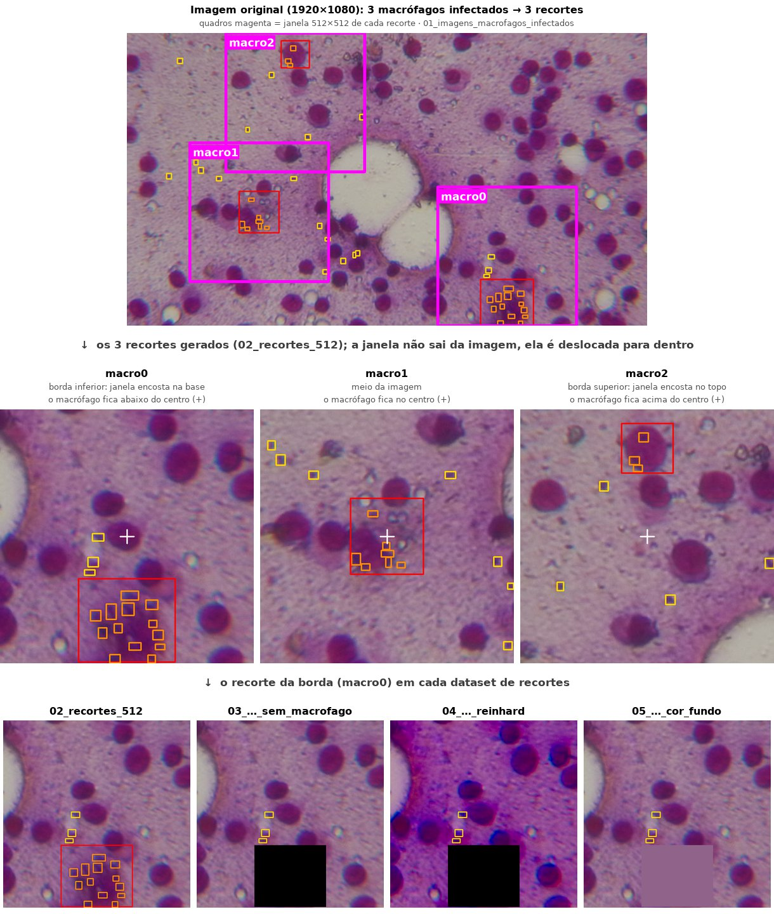

02_datasets_derivados
Datasets gerados a partir de 00_dataset_cvat/ e usados pelos novos experimentos (exp10 em diante). O prefixo de cada pasta é o número do notebook de 01_preprocessamento/ que a gera.
Ficam aqui só os datasets usados pelos experimentos atuais e as etapas intermediárias necessárias para gerá-los de novo: 01_ → 02_ → 03_ → 04_, e 02_ → 05_. As variantes usadas só em experimentos anteriores (exp06_recortes_512_realce_clahe/ e exp07_recortes_512_lab/) foram movidas para 03_experimentos anteriores/datasets_derivados/.
| Pasta | Gerado por | Origem | Conteúdo | Usado em | Tamanho |
|---|---|---|---|---|---|
01_imagens_macrofagos_infectados/ |
01_preprocessamento/01_filtrar_imagens_infectadas.ipynb |
00_dataset_cvat/ |
599 imagens inteiras (1920×1080) com ao menos um macrófago infectado e os .txt originais |
entrada da etapa 02 | 1,4 GB |
02_recortes_512/ |
01_preprocessamento/02_gerar_recortes_512.ipynb |
01_imagens_macrofagos_infectados/ |
1.568 recortes 512×512 centrados em macrófagos infectados, com todas as classes | entrada da etapa 03; exp01–exp05 | 402 MB |
03_recortes_512_sem_macrofago/ |
01_preprocessamento/03_mascarar_macrofago_nos_recortes.ipynb |
02_recortes_512/ |
mesmos 1.568 recortes, com a bbox do macrófago pintada de preto e sem as anotações macrophage/inside-macrophage |
exp10, exp12, exp14; exp08, exp09 | 351 MB |
04_recortes_512_sem_macrofago_reinhard/ |
01_preprocessamento/04_normalizar_coloracao_reinhard.ipynb |
03_recortes_512_sem_macrofago/ |
mesmos recortes do 03_, com a coloração de cada lâmina normalizada para a da leish_7 (Reinhard por lâmina, espaço Lab); anotações iguais |
exp11 | 433 MB |
05_recortes_512_macrofago_cor_fundo/ |
01_preprocessamento/05_mascarar_macrofago_cor_fundo.ipynb |
02_recortes_512/ |
igual ao 03_, mas a bbox do macrófago é preenchida com a cor mediana do fundo do recorte, e não com preto; anotações iguais |
exp13 | 352 MB |
Exemplos

As imagens de exemplo ficam em 02_datasets_derivados/figuras/, fora das pastas dos datasets. Os notebooks percorrem as subpastas de cada dataset e tratariam uma pasta de figuras como se fosse uma lâmina.
Recortes por lâmina
Todos os datasets de recorte têm a mesma contagem.
| leish_1 | leish_2 | leish_3 | leish_4 | leish_5 | leish_7 | leish_8 | leish_9 | Total | |
|---|---|---|---|---|---|---|---|---|---|
Imagens (01_) |
67 | 46 | 11 | 47 | 127 | 95 | 134 | 72 | 599 |
Recortes (02_ a 05_) |
96 | 127 | 17 | 126 | 361 | 280 | 353 | 208 | 1.568 |
Instâncias de leishmania fora do macrófago |
831 | 642 | 10 | 132 | 4.725 | 2.283 | 992 | 1.073 | 10.688 |
Estrutura e formato (igual em todas as pastas)
<dataset>/
├── README.html explicação daquele dataset
├── obj.names 0 Non-macrophages · 1 macrophage · 2 leishmania · 3 inside-macrophage
└── leish_N/ uma subpasta por lâmina (leish_1, 2, 3, 4, 5, 7, 8, 9)
├── <nome>.png
└── <nome>.txt YOLO: "classe xc yc w h" (normalizados 0–1), uma caixa por linha
- Nome dos recortes:
<imagem_original>_macro<i>.png, ondeié o índice do macrófago infectado naquela imagem. Recortes da mesma imagem podem se sobrepor. - Os experimentos usam só a classe
2 leishmania, remapeada para0. Esse remapeamento é feito na montagem dos folds, e não aqui.
Observações
- Em
03_recortes_512_sem_macrofago/, 339 recortes ficaram com o.txtvazio: tinham sómacrophage/inside-macrophage. Eles servem de exemplos negativos. - As pastas
folds_yolo/de cada experimento em05_novos_experimentos/e03_experimentos anteriores/folds_yolo/contêm links simbólicos para as imagens destas pastas. Não renomeie nem apague estas pastas sem atualizar esses links. - Renomeadas em 17 nov. 2026. Os nomes antigos eram
dataset_macrofagos_infectados,dataset_recortes_macrofagos_infectados,dataset_recortes_macrofagos_infectados_sem_macrofago,dataset_recortes_macrofagos_infectados_realceedataset_recortes_macrofagos_infectados_lab. Os notebooks antigos de03_experimentos anteriores/ainda usam os nomes antigos. - Em 17 nov. 2026, as variantes
exp06_eexp07_foram movidas para03_experimentos anteriores/datasets_derivados/, porque o exp10 não as usa. - Em 18 nov. 2026, foram criados
04_recortes_512_sem_macrofago_reinhard/e05_recortes_512_macrofago_cor_fundo/, para os exp11 e exp13.